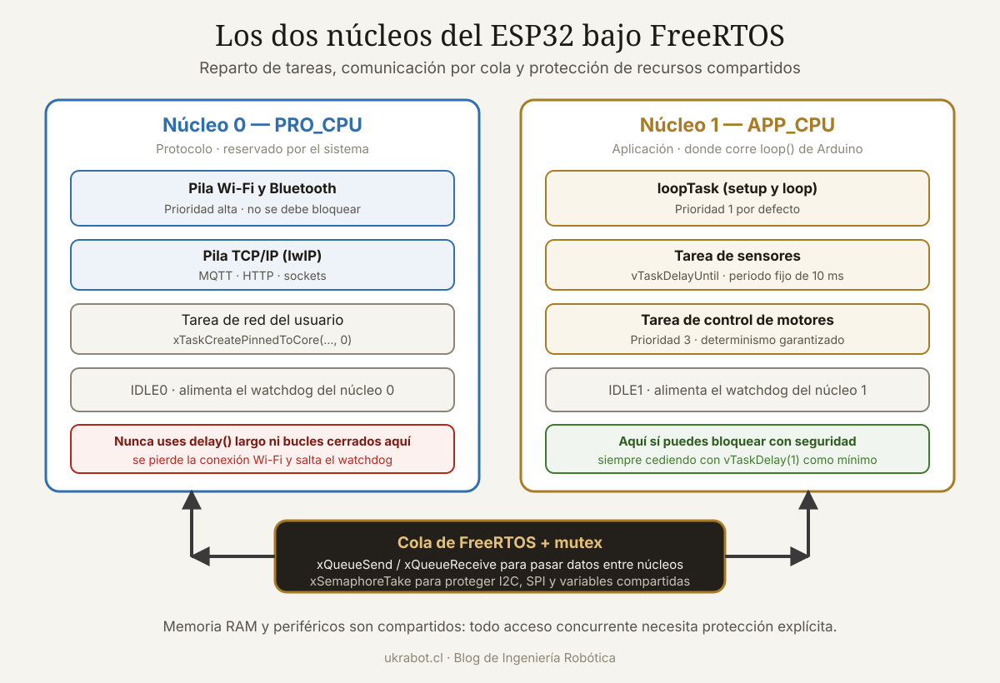

Qué cubre esta guía
- La arquitectura real del ESP32
- FreeRTOS en treinta segundos
- Crear tareas ancladas a cada núcleo
- Prioridades y reparto de trabajo
- Colas: la forma correcta de pasar datos
- Mutex, semáforos y secciones críticas
- El watchdog y por qué se reinicia tu ESP32
- Errores frecuentes y cómo evitarlos
- Ejemplo completo: estación de sensores con MQTT
- Conclusión
- Preguntas frecuentes
La arquitectura real del ESP32
El ESP32 clásico incorpora dos núcleos Xtensa LX6 de 32 bits que funcionan a hasta 240 MHz. No son núcleos especializados ni desiguales: ambos tienen las mismas capacidades y acceden a la misma memoria. Sus nombres provienen del uso que Espressif les dio originalmente:
- Núcleo 0 — PRO_CPU (protocol CPU): aquí se ejecutan por defecto las tareas de WiFi, Bluetooth y la pila TCP/IP.
- Núcleo 1 — APP_CPU (application CPU): aquí corre tu código de Arduino. Las funciones
setup()yloop()viven en este núcleo.
loop() es una tarea de FreeRTOS llamada loopTask, anclada al núcleo 1 con prioridad 1. Mientras tanto, el núcleo 0 mantiene viva la conectividad. Lo que falta no es activar nada, sino repartir tu propio trabajo.| Variante | Núcleos | Arquitectura | Frecuencia máxima | Multinúcleo |
|---|---|---|---|---|
| ESP32 (original) | 2 | Xtensa LX6 | 240 MHz | Sí |
| ESP32-S2 | 1 | Xtensa LX7 | 240 MHz | No |
| ESP32-S3 | 2 | Xtensa LX7 | 240 MHz | Sí |
| ESP32-C3 | 1 | RISC-V | 160 MHz | No |
| ESP32-C6 | 1 + 1 de bajo consumo | RISC-V | 160 MHz | Parcial |
| ESP32-P4 | 2 | RISC-V | 400 MHz | Sí |
Antes de escribir código multinúcleo, verifica qué chip tienes. El código de esta guía funciona en ESP32 y ESP32-S3; en las variantes de un solo núcleo, xTaskCreatePinnedToCore compila pero ignora el parámetro de núcleo.
FreeRTOS en treinta segundos
FreeRTOS es un sistema operativo de tiempo real que reparte el procesador entre varias tareas. Cada tarea es una función que se ejecuta en un bucle infinito y tiene su propia pila de memoria. El planificador decide en cada momento cuál se ejecuta, con dos reglas simples:
- Siempre corre la tarea lista de mayor prioridad.
- Entre tareas de igual prioridad, el tiempo se reparte por turnos (round-robin) cada tick del sistema, que en el ESP32 es de 1 ms por defecto.
La palabra "preventivo" es clave: el planificador puede interrumpir tu tarea en cualquier instrucción para dar paso a otra de mayor prioridad. Esa es exactamente la razón por la que compartir datos entre tareas requiere cuidado.
| Estado | Significado |
|---|---|
| Running | Ejecutándose ahora mismo en un núcleo |
| Ready | Lista para ejecutarse, esperando su turno |
| Blocked | Esperando un evento: un dato en una cola, un semáforo o un retardo |
| Suspended | Detenida explícitamente; no se planifica |
El estado Blocked es el más importante y el peor entendido. Una tarea bloqueada no consume CPU: el planificador la ignora hasta que ocurra lo que espera. Por eso vTaskDelay() es radicalmente distinto de delay() de Arduino en un bucle vacío: el primero cede el procesador, el segundo también lo hace en ESP32, pero un bucle while sin cesión bloquea el núcleo entero.
Crear tareas ancladas a cada núcleo
La función clave es xTaskCreatePinnedToCore(), que crea una tarea y la fija a un núcleo concreto.
BaseType_t xTaskCreatePinnedToCore(
TaskFunction_t pvTaskCode, // función de la tarea
const char * pcName, // nombre para depuración
uint32_t usStackDepth, // tamaño de pila EN BYTES en ESP32
void * pvParameters, // parámetro que recibe la tarea
UBaseType_t uxPriority, // prioridad: 0 = mínima
TaskHandle_t * pvCreatedTask, // manejador (puede ser NULL)
BaseType_t xCoreID // 0, 1 o tskNO_AFFINITY
);Ejemplo mínimo funcional
TaskHandle_t tareaSensorHandle = NULL;
TaskHandle_t tareaRedHandle = NULL;
void tareaSensor(void *parametros) {
// Lectura periódica precisa, anclada al núcleo 1
TickType_t ultimoDespertar = xTaskGetTickCount();
const TickType_t periodo = pdMS_TO_TICKS(100); // 10 Hz
for (;;) {
int lectura = analogRead(34);
Serial.printf("[Núcleo %d] Sensor: %d\n", xPortGetCoreID(), lectura);
// Espera hasta el próximo múltiplo exacto de 100 ms:
// no acumula deriva como vTaskDelay
vTaskDelayUntil(&ultimoDespertar, periodo);
}
}
void tareaRed(void *parametros) {
for (;;) {
Serial.printf("[Núcleo %d] Trabajo de red\n", xPortGetCoreID());
vTaskDelay(pdMS_TO_TICKS(1000));
}
}
void setup() {
Serial.begin(115200);
xTaskCreatePinnedToCore(tareaSensor, "sensor", 4096, NULL, 2, &tareaSensorHandle, 1);
xTaskCreatePinnedToCore(tareaRed, "red", 4096, NULL, 1, &tareaRedHandle, 0);
}
void loop() {
// loopTask corre en el núcleo 1 con prioridad 1.
// Si no la necesitas, cede el procesador o elimínala.
vTaskDelay(pdMS_TO_TICKS(1000));
}Fíjate en vTaskDelayUntil(): a diferencia de vTaskDelay(), que espera un intervalo desde ahora, este espera hasta un instante absoluto. Si el trabajo de la tarea tarda 30 ms, vTaskDelay(100) produce un periodo real de 130 ms y la deriva se acumula. vTaskDelayUntil() mantiene los 100 ms exactos. Para muestreo de sensores, es la diferencia entre datos con marca temporal fiable y datos que se desfasan.
Dimensionar la pila correctamente
// Consultar cuánta pila quedó sin usar (en bytes, valor mínimo histórico)
UBaseType_t libre = uxTaskGetStackHighWaterMark(tareaSensorHandle);
Serial.printf("Pila libre mínima: %u bytes\n", libre);Método práctico: asigna 4096 bytes, ejecuta el programa haciendo todo lo que la tarea deba hacer, y consulta el high water mark. Ajusta dejando al menos un 25 % de margen. Las tareas que usan Serial.printf, cadenas String, TLS o la biblioteca WiFi necesitan bastante más: 8192 bytes es un punto de partida razonable en esos casos.
Prioridades y reparto de trabajo
En el ESP32 las prioridades van de 0 (la más baja, reservada a la tarea inactiva) hasta configMAX_PRIORITIES - 1, que por defecto es 24. Algunas referencias útiles del sistema:
| Prioridad | Ocupante habitual | Núcleo |
|---|---|---|
| 0 | Tarea IDLE | Ambos |
| 1 | loopTask de Arduino | 1 |
| 1 | Tarea de eventos del sistema | 0 |
| 18 | Pila WiFi | 0 |
| 23 | Controlador de temporizadores | 0 |
| 24 | Máxima disponible | — |
Cómo repartir el trabajo entre núcleos
| Tipo de trabajo | Núcleo sugerido | Motivo |
|---|---|---|
| WiFi, Bluetooth, MQTT, HTTP | 0 | Convive con las pilas del sistema que ya viven allí |
| Muestreo de sensores con temporización estricta | 1 | Menos interferencia de las tareas de radio |
| Control de motores, PWM, generación de pulsos | 1 | Requiere determinismo |
| Pantallas, interfaz de usuario | 1 | Puede tolerar variaciones |
| Procesamiento de datos, filtros, FFT | 1 | Carga de cálculo aislada de la red |
| Registro en tarjeta SD | 0 | Operaciones lentas y bloqueantes |
La regla general: todo lo que hable con el mundo exterior por radio, al núcleo 0; todo lo que necesite tiempos precisos, al núcleo 1. Si una tarea no tiene requisitos especiales, puedes crearla con tskNO_AFFINITY y dejar que el planificador la ubique donde haya hueco.
Colas: la forma correcta de pasar datos
Aquí está el corazón del asunto. Dos tareas en núcleos distintos no pueden compartir una variable global sin protección. Los motivos son concretos y no teóricos:
- Cada núcleo tiene su propia caché; un valor escrito por uno puede no ser visible aún para el otro.
- Una estructura de varios campos puede leerse a medio escribir, dando un estado incoherente.
- El compilador puede reordenar o eliminar accesos que considera redundantes.
La cola de FreeRTOS resuelve todo esto: es segura entre núcleos, copia los datos por valor y permite que el receptor se bloquee sin consumir CPU mientras espera.
typedef struct {
uint32_t marcaTiempo;
float temperatura;
float humedad;
uint8_t idSensor;
} LecturaSensor_t;
QueueHandle_t colaLecturas;
void tareaProductor(void *pv) {
LecturaSensor_t muestra;
TickType_t t = xTaskGetTickCount();
for (;;) {
muestra.marcaTiempo = millis();
muestra.temperatura = leerTemperatura();
muestra.humedad = leerHumedad();
muestra.idSensor = 1;
// Envío sin bloquear: si la cola está llena, se descarta y se avisa
if (xQueueSend(colaLecturas, &muestra, 0) != pdPASS) {
Serial.println("Cola llena: muestra descartada");
}
vTaskDelayUntil(&t, pdMS_TO_TICKS(100));
}
}
void tareaConsumidor(void *pv) {
LecturaSensor_t recibida;
for (;;) {
// Espera bloqueado hasta 1 s. No consume CPU mientras espera.
if (xQueueReceive(colaLecturas, &recibida, pdMS_TO_TICKS(1000)) == pdPASS) {
Serial.printf("[N%d] t=%lu T=%.2f H=%.2f\n",
xPortGetCoreID(), recibida.marcaTiempo,
recibida.temperatura, recibida.humedad);
publicarMQTT(recibida);
} else {
Serial.println("Sin datos en 1 s");
}
}
}
void setup() {
Serial.begin(115200);
colaLecturas = xQueueCreate(20, sizeof(LecturaSensor_t));
if (colaLecturas == NULL) {
Serial.println("Error: sin memoria para la cola");
while (true) { vTaskDelay(1000); }
}
xTaskCreatePinnedToCore(tareaProductor, "prod", 4096, NULL, 3, NULL, 1);
xTaskCreatePinnedToCore(tareaConsumidor, "cons", 8192, NULL, 2, NULL, 0);
}Este patrón productor-consumidor resuelve la mayoría de los proyectos reales: un núcleo muestrea con temporización estricta, el otro publica por red a su ritmo, y la cola absorbe las diferencias de velocidad. Si la red se pone lenta, la cola se llena y descartas muestras de forma controlada en lugar de bloquear el muestreo.
Mutex, semáforos y secciones críticas
Cuando el recurso compartido no son datos que fluyen sino algo que se usa —un bus I2C, una pantalla, la tarjeta SD—, la herramienta correcta es el mutex.
SemaphoreHandle_t mutexI2C;
void setup() {
mutexI2C = xSemaphoreCreateMutex();
}
void usarBusI2C() {
if (xSemaphoreTake(mutexI2C, pdMS_TO_TICKS(100)) == pdTRUE) {
// Sección protegida: solo una tarea a la vez
Wire.beginTransmission(0x68);
Wire.write(0x3B);
Wire.endTransmission(false);
Wire.requestFrom(0x68, 6);
// ... leer datos ...
xSemaphoreGive(mutexI2C); // liberar SIEMPRE
} else {
Serial.println("Bus I2C ocupado, se omite esta lectura");
}
}Un mutex de FreeRTOS incorpora herencia de prioridad: si una tarea de baja prioridad tiene el mutex y una de alta prioridad lo pide, la primera sube temporalmente de prioridad para liberarlo cuanto antes. Esto evita la inversión de prioridad, un fallo clásico de los sistemas de tiempo real.
Secciones críticas para datos muy pequeños
portMUX_TYPE mux = portMUX_INITIALIZER_UNLOCKED;
volatile uint32_t contadorPulsos = 0;
void IRAM_ATTR isrPulso() {
portENTER_CRITICAL_ISR(&mux);
contadorPulsos++;
portEXIT_CRITICAL_ISR(&mux);
}
uint32_t leerYReiniciarContador() {
uint32_t valor;
portENTER_CRITICAL(&mux);
valor = contadorPulsos;
contadorPulsos = 0;
portEXIT_CRITICAL(&mux);
return valor;
}Serial.print, delay, malloc ni a ninguna función que pueda bloquear. Hacerlo provoca reinicios por watchdog y comportamientos imposibles de depurar.Notificaciones de tarea: la opción ligera
Cuando solo necesitas avisar a una tarea de que ocurrió algo, sin transportar datos, las notificaciones son mucho más rápidas y consumen menos memoria que un semáforo:
TaskHandle_t tareaProcesoHandle;
void IRAM_ATTR isrBoton() {
BaseType_t despertarTareaMayor = pdFALSE;
vTaskNotifyGiveFromISR(tareaProcesoHandle, &despertarTareaMayor);
portYIELD_FROM_ISR(despertarTareaMayor);
}
void tareaProceso(void *pv) {
for (;;) {
// Se bloquea hasta recibir la notificación
ulTaskNotifyTake(pdTRUE, portMAX_DELAY);
Serial.println("Botón pulsado, procesando...");
}
}El watchdog y por qué se reinicia tu ESP32
El error más frecuente al empezar con multinúcleo es este mensaje:
E (5234) task_wdt: Task watchdog got triggered.
E (5234) task_wdt: The following tasks did not reset the watchdog in time:
E (5234) task_wdt: - IDLE0 (CPU 0)Significa que la tarea IDLE de un núcleo no pudo ejecutarse durante 5 segundos, porque una tarea de mayor prioridad nunca cedió el procesador. La causa casi siempre es un bucle como este:
// MAL: acapara el núcleo por completo
void tareaMala(void *pv) {
for (;;) {
if (digitalRead(PIN) == HIGH) {
hacerAlgo();
}
// sin ninguna cesión: el planificador nunca recupera el control
}
}
// BIEN: cede el procesador en cada vuelta
void tareaBuena(void *pv) {
for (;;) {
if (digitalRead(PIN) == HIGH) {
hacerAlgo();
}
vTaskDelay(pdMS_TO_TICKS(10)); // cede 10 ms
}
}
// MEJOR: no consulta en bucle, espera un evento
void tareaOptima(void *pv) {
for (;;) {
ulTaskNotifyTake(pdTRUE, portMAX_DELAY); // 0 % de CPU esperando
hacerAlgo();
}
}La tercera versión es la que deberías buscar siempre: en lugar de preguntar constantemente si algo ocurrió, la tarea se bloquea hasta que una interrupción o una cola la despierta. Consume cero CPU mientras espera y responde en microsegundos cuando llega el evento.
Medir el uso real de cada núcleo
// Requiere habilitar las estadísticas de tiempo de ejecución en menuconfig
void imprimirEstadisticas() {
char buffer[1024];
vTaskGetRunTimeStats(buffer);
Serial.println("Tarea\t\tTiempo\t\t%");
Serial.println(buffer);
}
// Alternativa siempre disponible: memoria libre y marca de agua
void diagnostico() {
Serial.printf("Heap libre: %u bytes (mínimo histórico: %u)\n",
ESP.getFreeHeap(), ESP.getMinFreeHeap());
Serial.printf("Tareas activas: %u\n", uxTaskGetNumberOfTasks());
}Errores frecuentes y cómo evitarlos
| Error | Síntoma | Solución |
|---|---|---|
| Pila insuficiente | Guru Meditation / Stack canary watchpoint | Aumentar pila; medir con uxTaskGetStackHighWaterMark |
| Bucle sin cesión | Task watchdog got triggered | Añadir vTaskDelay o bloquear en un evento |
| Variable global compartida sin protección | Valores incoherentes e intermitentes | Usar cola, mutex o sección crítica |
| Tarea que retorna | Reinicio inmediato | Bucle infinito o terminar con vTaskDelete(NULL) |
Uso de delay() en ISR | Cuelgue o pánico | Las ISR deben ser mínimas y usar variantes FromISR |
ISR sin IRAM_ATTR | Fallo al acceder a flash durante escritura | Marcar la ISR con IRAM_ATTR |
| Prioridad alta en núcleo 0 | WiFi inestable, desconexiones | Mantener las tareas de usuario por debajo de 18 |
| Cola creada después de usarla | Cuelgue al arrancar | Crear objetos de sincronización antes que las tareas |
No comprobar el retorno de xQueueSend | Pérdida silenciosa de datos | Verificar siempre el valor devuelto |
Fragmentación del heap con String | Fallos tras horas de funcionamiento | Usar búferes de tamaño fijo en tareas de larga vida |
volatile: marcar una variable como volatile impide que el compilador la optimice, pero no la hace segura entre núcleos. Es necesario para variables modificadas dentro de una ISR y leídas fuera, pero no sustituye a un mutex ni a una sección crítica cuando hay accesos concurrentes desde dos núcleos.Ejemplo completo: estación de sensores con MQTT
Un caso realista que combina todo lo anterior: muestreo determinista en el núcleo 1, publicación por red en el núcleo 0, y una cola entre ambos.
#include <WiFi.h>
#include <PubSubClient.h>
#define TAM_COLA 30
#define PERIODO_MS 200
typedef struct {
uint32_t ms;
float valor;
} Muestra_t;
QueueHandle_t colaMuestras;
SemaphoreHandle_t mutexSerie;
WiFiClient wifiCliente;
PubSubClient mqtt(wifiCliente);
void logSeguro(const char *msg) {
if (xSemaphoreTake(mutexSerie, pdMS_TO_TICKS(50)) == pdTRUE) {
Serial.printf("[N%d] %s\n", xPortGetCoreID(), msg);
xSemaphoreGive(mutexSerie);
}
}
// NÚCLEO 1 — adquisición con periodo estricto
void tareaAdquisicion(void *pv) {
TickType_t t = xTaskGetTickCount();
Muestra_t m;
for (;;) {
m.ms = millis();
m.valor = analogRead(34) * (3.3f / 4095.0f);
if (xQueueSend(colaMuestras, &m, 0) != pdPASS) {
logSeguro("Cola llena: muestra descartada");
}
vTaskDelayUntil(&t, pdMS_TO_TICKS(PERIODO_MS));
}
}
// NÚCLEO 0 — red y publicación
void tareaPublicacion(void *pv) {
Muestra_t m;
char carga[64];
for (;;) {
if (!mqtt.connected()) {
logSeguro("Reconectando MQTT...");
mqtt.connect("esp32-estacion");
vTaskDelay(pdMS_TO_TICKS(2000));
continue;
}
mqtt.loop();
if (xQueueReceive(colaMuestras, &m, pdMS_TO_TICKS(500)) == pdPASS) {
snprintf(carga, sizeof(carga),
"{\"ms\":%lu,\"v\":%.3f}", m.ms, m.valor);
mqtt.publish("estacion/sensor", carga);
}
}
}
// NÚCLEO 1 — supervisión de salud del sistema
void tareaSupervision(void *pv) {
char buf[96];
for (;;) {
snprintf(buf, sizeof(buf), "Heap:%u EnCola:%u",
ESP.getFreeHeap(),
(unsigned)uxQueueMessagesWaiting(colaMuestras));
logSeguro(buf);
vTaskDelay(pdMS_TO_TICKS(10000));
}
}
void setup() {
Serial.begin(115200);
mutexSerie = xSemaphoreCreateMutex();
colaMuestras = xQueueCreate(TAM_COLA, sizeof(Muestra_t));
configASSERT(mutexSerie && colaMuestras);
WiFi.begin("miRed", "miClave");
mqtt.setServer("192.168.1.10", 1883);
xTaskCreatePinnedToCore(tareaAdquisicion, "adq", 4096, NULL, 4, NULL, 1);
xTaskCreatePinnedToCore(tareaPublicacion, "pub", 8192, NULL, 2, NULL, 0);
xTaskCreatePinnedToCore(tareaSupervision, "sup", 4096, NULL, 1, NULL, 1);
vTaskDelete(NULL); // no necesitamos loopTask
}
void loop() { }Observa el detalle final: vTaskDelete(NULL) al terminar setup() elimina la loopTask de Arduino y libera su pila, unos 8 KB. Cuando toda la lógica vive en tareas propias, mantener un loop() vacío es desperdiciar memoria.
Este esquema se aplica igual a un proyecto de domótica con ESP32 y MQTT o al control de un brazo robótico con ESP32, donde la temporización del control no puede depender de la latencia de la red.
Conclusión
Usar los dos núcleos del ESP32 no consiste en "activar" nada: consiste en diseñar tu programa como un conjunto de tareas que se comunican por canales seguros. La función xTaskCreatePinnedToCore() es la parte fácil; lo que separa un proyecto estable de uno que se reinicia cada pocas horas es cómo compartes los datos.
Tres reglas que resuelven la mayoría de los casos: los datos que fluyen viajan por colas, los recursos que se comparten se protegen con mutex, y ninguna tarea acapara un núcleo sin ceder el procesador. Si respetas esas tres, el resto es ajustar prioridades y tamaños de pila.
Empieza midiendo: añade una tarea de supervisión que informe del heap libre, de la marca de agua de las pilas y de la ocupación de las colas. Esos tres números te dirán antes que ningún otro síntoma si tu diseño se sostiene o si estás a unas horas de un reinicio inesperado.
Preguntas frecuentes
¿Todos los ESP32 tienen dos núcleos?
No. El ESP32 original, el ESP32-S3 y el ESP32-P4 son de doble núcleo. El ESP32-S2, el ESP32-C3 y el ESP32-C6 tienen un solo núcleo principal. En estas variantes de un núcleo, la función xTaskCreatePinnedToCore compila sin errores pero el parámetro de núcleo se ignora y todas las tareas comparten el mismo procesador. Verifica el modelo exacto de tu placa antes de diseñar en torno al multinúcleo.
¿Puedo usar delay() dentro de una tarea de FreeRTOS?
En el ESP32, la función delay() de Arduino está implementada sobre vTaskDelay(), así que cede el procesador correctamente y su uso dentro de una tarea es aceptable. Lo que sí bloquea el núcleo es un bucle while activo sin ninguna cesión, o el uso de delayMicroseconds() con valores grandes, que sí es una espera activa. Para tareas periódicas, vTaskDelayUntil() es preferible porque mantiene el periodo exacto sin acumular deriva.
¿Cuánta pila necesita una tarea del ESP32?
Depende de lo que haga. Una tarea sencilla con aritmética y llamadas a digitalRead funciona con 2048 bytes. Si usa Serial.printf, cadenas String o bibliotecas de red, empieza en 4096 y sube a 8192 para tareas con WiFi, TLS o MQTT. Recuerda que en el ESP32 el parámetro se expresa en bytes, no en palabras. La forma correcta de ajustarlo es medir con uxTaskGetStackHighWaterMark tras ejecutar todos los caminos del código y dejar un margen del 25 por ciento.
¿Por qué mi ESP32 se reinicia con el mensaje del task watchdog?
Porque una tarea acaparó un núcleo durante más de cinco segundos sin ceder el procesador, impidiendo que se ejecutara la tarea IDLE. La causa habitual es un bucle for o while que consulta constantemente un pin o una condición sin ninguna llamada a vTaskDelay. La solución inmediata es añadir vTaskDelay al final del bucle; la solución correcta es rediseñar la tarea para que se bloquee esperando un evento mediante una cola, un semáforo o una notificación.
¿Puedo compartir una variable global entre los dos núcleos?
No de forma directa y segura. Cada núcleo tiene su propia caché, una estructura de varios campos puede leerse a medio escribir y el compilador puede reordenar accesos. Para datos que fluyen de una tarea a otra usa una cola de FreeRTOS, que copia por valor y es segura entre núcleos. Para variables simples de acceso muy frecuente usa una sección crítica con portMUX_TYPE, y para recursos compartidos como un bus I2C usa un mutex. La palabra clave volatile por sí sola no resuelve el problema.
¿Qué ganancia real de rendimiento obtengo al usar los dos núcleos?
No es el doble. La mejora depende de si tu carga se puede dividir en partes verdaderamente independientes. El beneficio principal del multinúcleo en el ESP32 no suele ser la velocidad bruta sino el aislamiento temporal: al mover el muestreo de sensores o el control de motores al núcleo 1, dejan de verse afectados por las pausas impredecibles que introducen las pilas de WiFi y Bluetooth en el núcleo 0. Esa previsibilidad vale más que el rendimiento adicional en la mayoría de los proyectos.
Este artículo es contenido editorial independiente: no contiene ubicaciones patrocinadas ni enlaces de afiliado. Si en futuras actualizaciones se agregan enlaces a proveedores de componentes, serán identificados explícitamente. El código y las conexiones son referenciales y deben adaptarse y probarse con tu propio hardware. Si detectas un error en esta guía, por favor avísanos.
Sigue aprendiendo
Aplica este patrón en un proyecto real con la guía de domótica con ESP32 y MQTT, o llévalo al control de movimiento con ESP32 como controlador de brazo robótico.
Fuentes primarias y lecturas recomendadas
Documentación oficial de Espressif y de FreeRTOS. Las prioridades y tamaños indicados corresponden a la configuración por defecto del framework Arduino para ESP32 y pueden variar según la versión.
- Espressif — Guía de FreeRTOS para ESP-IDF
- Espressif — Soporte multinúcleo simétrico en ESP32
- FreeRTOS — Referencia de la API de tareas y colas
- Espressif — Temporizador watchdog de tareas
- Espressif — Hoja de datos técnica de la serie ESP32
- Arduino-ESP32 — Repositorio oficial del núcleo Arduino
Enlaces revisados: 15 de agosto de 2026.